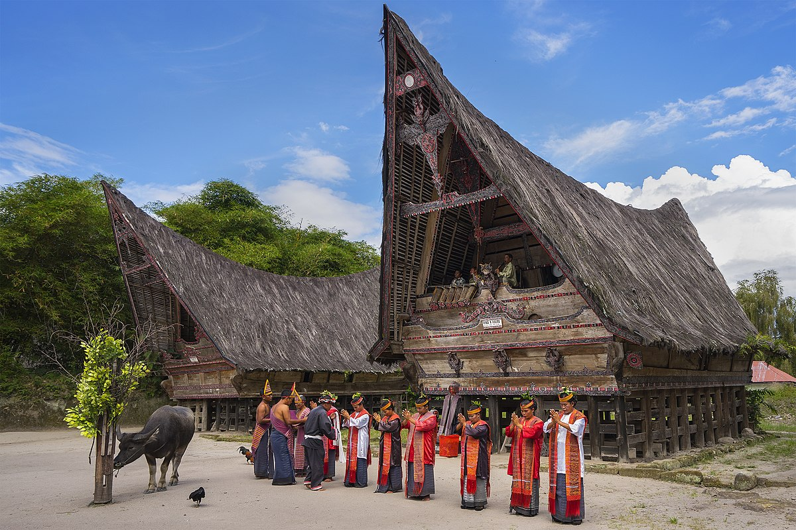

BUDAYA BATAK
Warisan Budaya yang Kaya dan Beragam
Suku Batak adalah salah satu suku bangsa terbesar di Indonesia yang mendiami dataran tinggi Sumatera Utara. Terdiri dari enam sub-suku utama: Toba, Karo, Simalungun, Pakpak, Mandailing, dan Angkola, masing-masing memiliki dialek dan variasi budaya tersendiri namun tetap berbagi identitas sebagai orang Batak.
"Dalihan Na Tolu" (tungku berkaki tiga) merupakan sistem kekerabatan Batak yang menopang struktur sosial dan mengatur hubungan antara tiga unsur kekerabatan: Hula-hula (keluarga dari pihak istri), Dongan Tubu (keluarga semarga), dan Boru (keluarga dari pihak suami anak perempuan).
01
Rumah Adat Batak (Rumah Bolon)
Rumah Bolon merupakan rumah adat tradisional suku Batak yang memiliki bentuk khas dengan atap yang menjulang tinggi menyerupai tanduk kerbau. Rumah ini dibangun tanpa menggunakan paku, melainkan menggunakan teknik ikat dan pasak. Struktur bangunan dibagi menjadi tiga bagian utama yang melambangkan dunia atas (banua ginjang), dunia tengah (banua tonga), dan dunia bawah (banua toru). Rumah Bolon biasanya dihiasi dengan ukiran-ukiran bermotif Gorga yang memiliki makna filosofis dan spiritual.
02
Musik dan Tarian
Gondang adalah alat musik tradisional Batak yang terdiri dari seperangkat gendang dan gong. Musik Gondang biasanya dimainkan pada upacara adat seperti pernikahan, pemakaman, dan perayaan panen. Tarian Tor-tor merupakan tarian tradisional Batak yang diiringi musik Gondang, di mana penari bergerak dengan gerakan tangan dan kaki yang khas, serta ekspresi wajah yang tenang dan penuh penghayatan. Tarian ini memiliki beragam jenis sesuai dengan konteks upacara yang sedang diselenggarakan.
03
Ulos: Kain Tenun Sakral
Ulos adalah kain tenun tradisional Batak yang memiliki nilai filosofis dan spiritual tinggi. Dalam kepercayaan Batak, Ulos merupakan perwujudan dari berkat dan perlindungan. Kain ini digunakan dalam berbagai upacara adat seperti kelahiran, pernikahan, dan kematian. Terdapat berbagai jenis Ulos dengan motif dan fungsi berbeda, seperti Ulos Ragidup untuk pernikahan, Ulos Saput untuk pemakaman, dan Ulos Ragi Hotang untuk pakaian sehari-hari. Proses pembuatan Ulos sangat rumit dan memerlukan keterampilan khusus yang diwariskan secara turun-temurun.
Marga dalam Budaya Batak
Marga merupakan identitas klan patrilineal yang sangat penting dalam struktur sosial masyarakat Batak. Sistem marga berfungsi sebagai pengatur perkawinan eksogami (larangan menikah dalam satu marga) dan menentukan posisi seseorang dalam upacara adat. Beberapa marga besar Batak antara lain Simbolon, Siburian, Sitorus, Panjaitan, Simatupang, Sinaga, Silalahi, Sihombing, dan Hutabarat.
Upacara Adat
Masyarakat Batak memiliki berbagai upacara adat yang masih dilestarikan hingga kini. Mangokkal Holi (penggalian tulang belulang leluhur) merupakan upacara penting dalam tradisi Batak Toba. Upacara ini dilakukan untuk memindahkan tulang belulang leluhur ke tempat pemakaman baru dengan tujuan menghormati dan memperoleh berkat dari arwah leluhur. Upacara pernikahan Batak juga sangat kaya dengan ritual dan simbol, seperti mangulosi (pemberian Ulos), manulangi (pemberian makanan), dan margondang (pesta dengan musik Gondang).
Aksara Batak
Suku Batak memiliki sistem tulisan tradisional yang disebut aksara Batak atau surat Batak. Aksara ini termasuk dalam rumpun Brahmi dan sudah ada sejak abad ke-14. Meski penggunaannya semakin jarang, upaya pelestarian aksara Batak terus dilakukan melalui pendidikan dan dokumentasi. Aksara Batak biasanya digunakan untuk menulis pustaha (kitab) yang berisi ilmu pengobatan, ramalan, dan mantra.